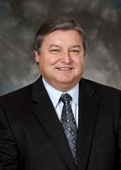

As a commitment to quality, Nerium SkinCare does not compromise on what goes into our products. The quality of Nerium Skincare's products is a direct result of the investment into the people, scientific research, new technology development, natural farming methods, biomass processing, cGMP production facilities, and product safety testing.
The Nerium Farms™ is the largest Nerium oleander operation of its kind in the world. Using environmentally responsible and sustainable techniques, these naturally grown Nerium oleander plants, provide the raw material that make Nerium SkinCare’s products revolutionary. Abiding by strict protocols, the Nerium oleander farm provides a dedicated and renewable biomass resource that is reserved exclusively for Nerium SkinCare.
Considering that there were no historical accounts of Nerium oleander farming, it was imperative for Nerium SkinCare to develop our own farming operations in order to broaden and commercialize access to the plant. Initially, transitioning of the plant from the nursery environment into a commercial environment involved the establishment of a research entity that allowed scientists to understand the growth patterns properly. Over time, as the physiology of Nerium oleander became more evident, planting and irrigation techniques, along with harvesting and planting equipment, had to be newly developed. Nerium SkinCare is proud to say that we built our current farming operations from the ground up.
After a decade of experience in Nerium oleander commercial farming, Nerium SkinCare continues to focus on new technology and research that will allow us to enhance our farming operations. We are very proud of our all natural approach and adherence to strict biomedical field protocols. We continually seek ways to increase land utilization and field plant capacity through the development of improved planting and irrigations techniques. Plans for field expansion are also in place.
Nerium SkinCare is proud of our core competency to control the entire process from the seedling into the final finished product.
We observed skin healing properties when researching the Nerium oleander plant in our labs. The history of Nerium SkinCare begins with groundbreaking research conducted by Dr. Robert Newman during his time with our parent company, Nerium Biotechnology. Dr. Newman’s research with natural botanical compounds led to the re-discovery, identification, isolation, and further development of core ingredients from the Nerium oleander plant. Continuing research and utilization of proprietary technologies has provided us the opportunity to develop a series of products that you know today as the NeriumAD® line of skin care.
Historical use of the Nerium oleander plant has been reported in ancient texts and folklore for more than 1,500 years. In fact, the Nerium oleander plant has been used traditionally as folk remedies for a wide variety of conditions. Over the last decade, there has been a considerable increase in the number of peer-reviewed studies in science journals that substantiate the properties of the Nerium oleander plant and its benefits.
The Nerium Farms™ is the largest Nerium oleander operation of its kind in the world. With over 100,000 Nerium oleander plants, we employ natural and organic farming practices and our orchard helps to minimize our carbon footprint by eliminating greenhouse gases throughout the year.
Our science begins at the farm where we use the latest horticulture techniques for watering, farming, and harvesting. For example, by also incorporating the use of the latest analytical instruments, we are better able to determine the optimal time for harvesting. Similar analytic processes are employed in other aspects of farming. From beginning to end, from farm to manufacturer to consumers, Nerium SkinCare is dedicated to providing real science and real results.
“We’re primarily after the leaves. And that's the reason why we do not want any irrigation water; we do not want any type of chemicals; nothing on the leaves. So it is a very specialized approach, it's extremely laborious, and it's very very expensive. No one has attempted to put in an orchard like this and they still haven’t. It's not that easy to get involved in this industry. It's very complex; there’s a lot of science that goes into it. Science not only starting at the field itself but all the way through the processing as well as to the end use. So it's an extremely complex dynamic approach. There’s no question in my mind that this field is much more than a field of dreams. It truly is a field of life”– Joel Curtis, Chief Agricultural Officer of Nerium Farms™
Nerium SkinCare formulators, developers and researchers are dedicated to offering new unique skincare solutions that are based on review of ingredient use experience, specific in vitro product testing, clinical research, pre/post consumer testing, scientific and the actual customer use reports and success. We strongly believe in sustainable, honest, health focused practices, and maximum disclosure of safety information.
Nerium SkinCare is constantly seeking new ways to educate our customers about our ingredients and products, how they were designed to work, and how to use them properly.
Nerium SkinCare makes every effort to ensure our products are safe and effective. However, that does not eliminate the chance that a consumer may have some sensitivity to one or more ingredients. If you have any specific health related questions, please consult your healthcare provider, and/or contact: Contact Us

Dennis R. Knocke, Chief Executive Officer and Chairman of the Board of Directors
Mr. Knocke attended Sam Houston State University in Huntsville, Texas. He has successfully founded and operated several start-up healthcare companies that were acquired by national and international business entities listed on the New York and London stock exchanges. Mr. Knocke was previously President of Bexar Credentials Verification, Inc., a start-up software technology company whose principals included the Bexar County Medical Society, the Texas Medical Liability Trust, and Florida Physicians Insurance Company.

Joseph B. Nester, Executive Vice President and Sec.-Treasurer
Mr. Nester graduated from the University of Texas at Austin with a BBA in General Business. He has over 23 years experience in the financial service industry as well as four years experience with a start-up pharmaceutical company, where he was initially the Secretary Treasurer and after four months was named the President. During this time, he led Anvirzel™ in a successful Phase I clinical study, implemented a Compassionate Use Investigational New Drug (CUIND) program, and had direct involvement with the FDA, among other regulatory agencies.

Lori Jones, Chief Financial Officer
Ms. Jones has more than 25 years’ experience in finance and accounting with both private and publicly held entities. She has served as Chief Financial Officer and other executive level positions in various industries including biotech, manufacturing, and technology. Those position included, in part, service as Vice President of Finance of CeloNova BioSciences, Inc, a global medical device manufacturer, CFO of Analytical Surveys, Inc., a publicly traded geo-spatial mapping company, and was a partner in Tatum CFO, LLP. Ms. Jones is a CPA and holds an MBA from the University of Texas at San Antonio.
Richard Boxer, Director
Mr. Boxer holds a B.A., from Queens University, Kingston, an M.B.A from York University, Toronto and is a Chartered Accountant. His career began with Clarkson Gordon (now Ernst & Young) and moved to the private business sector. During his business career he served as President of Waldec of Canada (a manufacturing company), acted as financial agent in a variety of equity transactions, founded and started a venture capital fund specializing in bridge loans, and has functioned as an angel investor in numerous business sectors. Presently Mr. Boxer is involved as a Director and a shareholder in Falls Management Company, which has built and is now managing an $800,000,000 casino in Niagara Falls, Ontario. He currently serves as President of Buckingham Capital Corporation, a privately owned Canadian merchant bank. Buckingham and an associated company, Rosmir Capital is involved in equity and debt financing, either as an agent or as a principal.
John F. O’Donnell, Director
Mr. O’Donnell obtained a Bachelor of Arts (Economics) and a Bachelor of Laws from the University of Windsor. He has practiced law in the City of Toronto since 1973 and is counsel to Stikeman Keeley Spiegel Pasternack LLP. His practice is primarily in the field of corporate and securities law and, as such, he is and has been counsel to several publicly traded companies. Mr. O’Donnell is currently also a director as well as Chairman of the Board of RX Exploration Inc.
J. Peter Nettelfield, Honorary/Founding Director (2007-2012)
Mr. Nettelfield attended the University of Manitoba in Winnipeg and prior to graduation joined the prestigious Canadian investment banking firm of Wood Gundy & Company, Limited. During his time there he assisted in the initial development of the Canadian money market. After 10 years with Wood Gundy, Mr. Nettelfield’s interest changed from fixed income securities to equities. He then joined Burns Bros. & Denton, noted for its excellent research department. Mr. Nettelfield serviced major institutions and commercial accounts. While at Burns Bros., at the invitation of Sir John Templeton, he became a director of the Templeton Growth Fund. Upon leaving the investment business, he moved to Texas where he became the president of the Texas subsidiary of a Canadian real estate development firm. In this capacity, he oversaw commercial development in Dallas, Austin, and San Antonio. In recent years, he has been active in various entrepreneurial endeavors. While Mr. Nettelfield has been a resident of Texas for over 30 years, he is proud of his Canadian heritage and has retained his Canadian citizenship.
Kerry Mitchell, Director
Ms. Mitchell completed the Executive Program at the Tuck School of Business at Dartmouth College in New Hampshire. She is a sought after speaker in Canada and the U.S. on topics including Media, Leadership,Branding, Marketing to Women, and Women in Business. She provides extensive experience as an executive with a strong record of building and transforming multi-platform media brands that include some of the most iconic names in Canadian publishing. Her extensive leadership experience in brand development, marketing and sales, including in the cosmetics, fashion, and lifestyle industries, will be a great benefit to the development and marketing of Nerium’s consumer products.
John Christopher Counsel Wansbrough, Director (Retired 2016)
Mr. Wansbrough holds a B.A., from the University of Toronto, and is a Chartered Financial Analyst. His career began with the prestigious Canadian investment banking firm of Wood Gundy & Company, Limited. After 7 years with Wood Gundy he joined National Trust Company Limited, were he served as President of National Trust Company from 1977 to 1986, Vice Chairman from 1986 to 1991 and Lead Director through 1995. Mr. Wansbrough has also served as Chairman of the Board of OMERS Realty Corporation from 1989 to 1997, Chairman of the R.S. McLaughlin Foundation from 1994 to 2007, and currently serves as Chairman of Rogers Telecommunications Limited from 1997 to the present. His service as a director to many additional business and community affiliations are too numerous to list.
Gustavo Ulloa, Jr., Director
Mr. Ulloa is General Manager and Director for Laboratorios Francelia, a pharmaceutical laboratory and manufacturing facility located in Tegucigalpa, Honduras. The GMP clean room of Nerium is located inside this facility. He is also Country Sales Manager and Director for Distribuidora Francelia, an import and distribution firm focusing on pharmaceuticals, disposables, hospital equipment, and related items. Mr. Ulloa attended the University of Miami where he studied Industrial Engineering. In his various capacities, he interacts with governmental agencies and private entities throughout Central America. Mr. Ulloa is a member of various pharmaceutical trade and producers organizations. He is presently involved in free trade negotiations related to pharmaceuticals between various Central American countries.
Robert A. Newman, Ph.D., Scientific Advisor
Dr. Newman obtained his M.S. and Ph.D. degrees in Pharmacology and Toxicology from the University of Connecticut and then served in postdoctoral positions at the Medical School of the University of Georgia as well as the Department of Biochemistry at the University of Vermont. He served as a faculty member at the University of Vermont Medical School for seven years and then spent a sabbatical year at Stanford University performing research on immune targeted therapy. He has spent the last 24 years at the University of Texas M. D. Anderson Cancer Center in Houston, Texas where he served as the founder and Co-Director of the Pharmaceutical Development Center. He has published over 270 articles dealing with the pharmacology, toxicology and development of anticancer drugs. Dr. Newman has recently retired (September 1, 2008) from M. D. Anderson, but remains actively involved in continuing research as Scientific Advisor to NBI.
Richard A. Evans, M.D., Medical Advisor
Dr. Evans currently is in General Practice, Cancer Consultation, and Medical Writing in Houston, Texas. He is a Diplomate of The American Board of Surgery. Dr. Evans worked with the late Dr. J. S. Stehlin, Jr., founder of the Stehlin Foundation, a world renowned cancer research facility located in Houston, Texas, and is co-author with Dr. Stehlin of several medical treatises dealing with cancer. Additionally, Dr. Evans is a prolific author in his own right publishing many articles on cancer and related immunology. Dr. Evans brings a comprehensive set of skills with him that NBI believes will enable us to integrate, evaluate, and analyze the relationship between oncogenesis and immune response both in the treatment of a naïve patient and the patient receiving various therapeutic agents.
Keith I. Block, M.D., Medical Advisor
Dr. Block is an internationally recognized integrative cancer-care specialist and visiting lecturer. As Medical Director of the Block Center for Integrative Cancer Care in Evanston, Illinois, the Block Center is committed to caring for people with cancer and improving total wellness through the integration of research-based complementary therapies with innovative approaches to conventional medicine. Dr. Block is the Director of Integrative Medical Education and the Clinical Assistant Professor, Department of Medical Education for the College of Medicine, University of Illinois at Chicago. While too numerous to list all governmental, teaching, and professional appointments here, Dr. Block is Editor-In-Chief of Integrated Cancer Therapies, Sage Science Press, a Member of The Editorial Board for Physician Data Query, CAM, National Cancer Institute, Bethesda, Maryland, and Scientific Director of the Institute for Integrative Cancer Research and Education. He brings first-hand clinical knowledge of Anvirzel™ and its effects through his observations of patients receiving Anvirzel™ therapy.
Donald E. Baxter, M.D., International Medical Advisor
Dr. Baxter is an internationally renowned and board-certified orthopedic surgeon with a private practice in Houston, Texas. He has been a Clinical Professor of Orthopedic Surgery at both Baylor College of Medicine and the University of Texas Health Science Center. While too numerous to list here, Dr. Baxter is the author of many papers and books. He is also an international and visiting lecturer. Additionally, Dr. Baxter is a past president and director of the Texas Neurofibromatosis Foundation. He brings first hand knowledge of Anvirzel ™ and its effects through his personal observations of family and friends receiving Anvirzel™ therapy.
Charles R. Hughes, Branding and Marketing Advisor
Mr. Hughes is the founder and presently operates Brand Rules, LLC, located in Severna Park, Maryland. Brand Rules is a consulting consortium that applies decades of experience to create, shape, and sustain successful brands. It guides clients in developing a differentiating market strategy, an engaged culture, and effective execution of product, marketing, and retail. Clients include Hyundai, Kia, Ford, and Zodiac as well as start-ups, not-for-profits, and marketing companies. Mr. Hughes was the founder, President, and CEO of Land Rover North America, BMW Group located in Lanham, Maryland. As Chief Executive Officer, he presided over a $1 billion, 24,000-unit sales enterprise that successfully introduced the first Range Rover then Land Rover to the North American market. NBI believes that Mr. Hughes’ experience with successfully building, branding, marketing, and expanding start-ups will be invaluable to NBI.